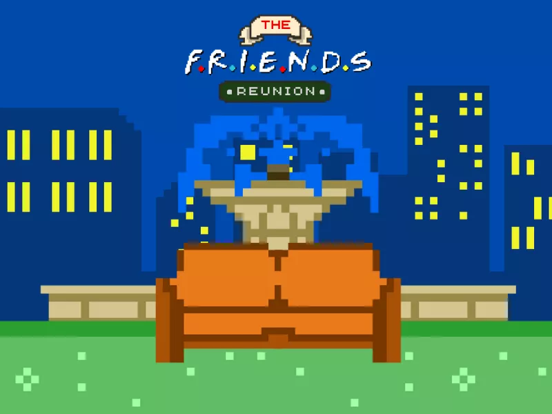
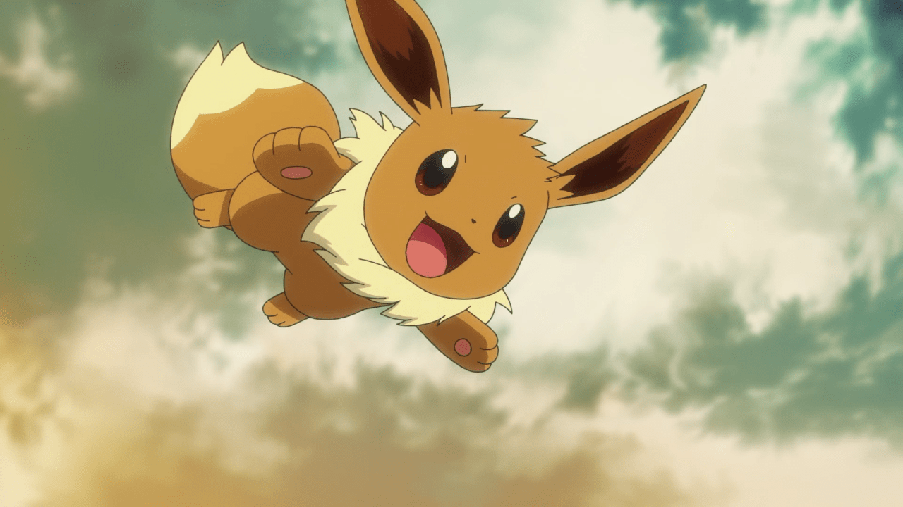
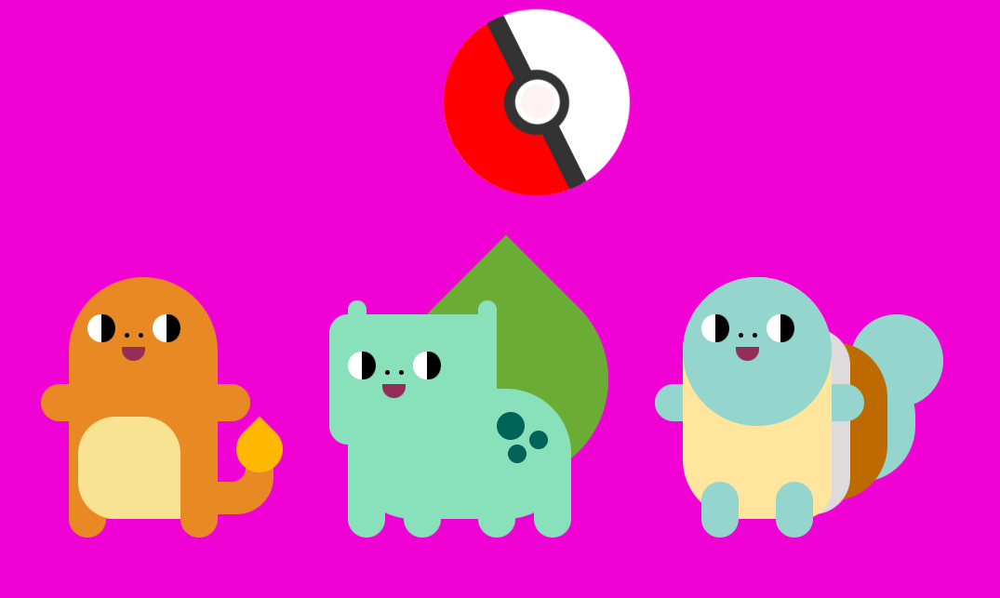
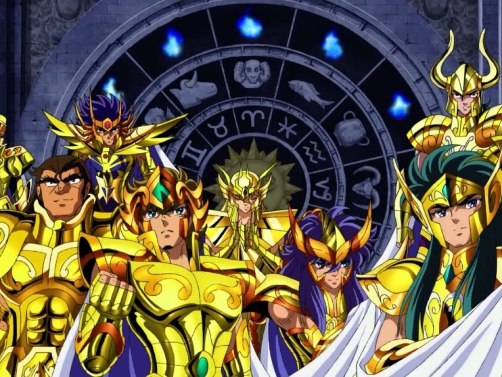

Portfolio
GIULIA GALZERANO
|  |
Para o projeto final, mergulhamos na criação de um jogo que promete muita nostalgia. O jogo é baseado em FRIENDS, um sitcom muito popular da década de noventa. No Thanksgiving day, Joey Tribbiani (personagem fictício próprio da série) precisa encontrar seus amigos para que possam jantar juntos, porém, todos eles estão escondidos. Logo, o jogador deverá fazer com que Joey ache seus amigos, passando por obstáculos e decifrando o labirinto dentro do apartamento de Mônica. |
|
Conjunto de desafios propostos em aula. Do pensamento lógico à resolução de problemas complexos, esse desafios foram cuidadosamente elaborados e resolvidos para desencadear o melhor em cada estudante. Acesse: Desafio 1 Acesse: Desafio 2 Acesse: Desafio 3 |
|  |
Jogo de arrastar e soltar. Desenvolvemos um envolvente jogo de arraste e solte, mergulhado no universo Pokémon. Treinadores têm a missão de organizar sua equipe, arrastando e soltando Pokémon estrategicamente para enfrentar desafios. Acesse: https://giu-g.github.io/dxdd/ |
|  |
Arte feita com CSS. Desenvolvemos um desenho interativo baseado no anime Pokemon. |
|  |
Qual cavaleiro você é? Forneça o dia e o mês do seu aniversário para descobrir o cavaleiro referente ao seu signo. |